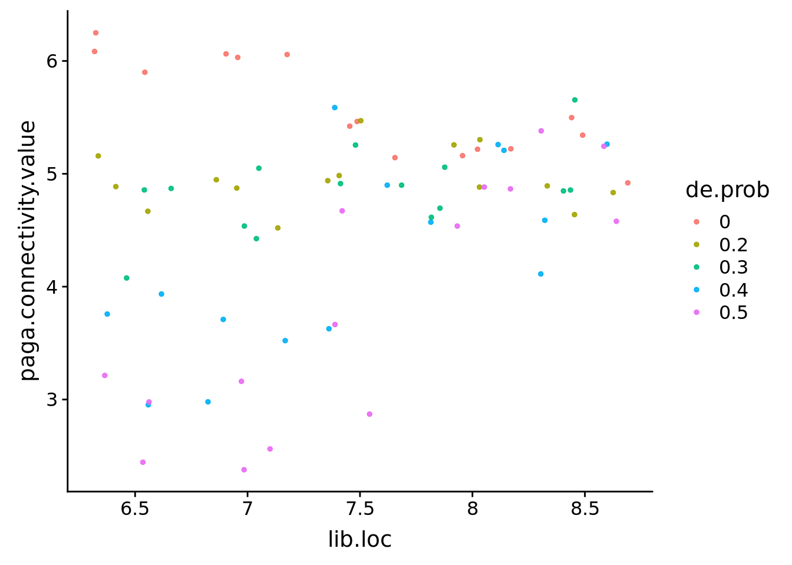

Last updated: 2019-07-15
Checks: 6 0
Knit directory: SecretUtils/
This reproducible R Markdown analysis was created with workflowr (version 1.3.0). The Checks tab describes the reproducibility checks that were applied when the results were created. The Past versions tab lists the development history.
Great! Since the R Markdown file has been committed to the Git repository, you know the exact version of the code that produced these results.
Great job! The global environment was empty. Objects defined in the global environment can affect the analysis in your R Markdown file in unknown ways. For reproduciblity it’s best to always run the code in an empty environment.
The command set.seed(20190415) was run prior to running the code in the R Markdown file. Setting a seed ensures that any results that rely on randomness, e.g. subsampling or permutations, are reproducible.
Great job! Recording the operating system, R version, and package versions is critical for reproducibility.
Nice! There were no cached chunks for this analysis, so you can be confident that you successfully produced the results during this run.
Great! You are using Git for version control. Tracking code development and connecting the code version to the results is critical for reproducibility. The version displayed above was the version of the Git repository at the time these results were generated.
Note that you need to be careful to ensure that all relevant files for the analysis have been committed to Git prior to generating the results (you can use wflow_publish or wflow_git_commit). workflowr only checks the R Markdown file, but you know if there are other scripts or data files that it depends on. Below is the status of the Git repository when the results were generated:
Ignored files:
Ignored: .Rhistory
Ignored: .Rproj.user/
Untracked files:
Untracked: .Rbuildignore
Untracked: R/asdf_bk
Untracked: R/hello.R
Untracked: analysis/about.knit.md
Untracked: analysis/about.utf8.md
Untracked: analysis/make_scanpy_viktor.R
Untracked: analysis/morphine.Rmd
Untracked: analysis/mouse_alzheimer_annotating.Rmd
Untracked: analysis/mouse_alzheimer_preproc.Rmd
Untracked: analysis/paga.Rmd
Untracked: analysis/paga3.Rmd
Untracked: analysis/simulate_data.Rmd
Untracked: analysis/subtype_distances.Rmd
Untracked: analysis/subtype_distances2.Rmd
Untracked: analysis/subtype_distances4.Rmd
Untracked: analysis/subtype_distances_redux.Rmd
Untracked: analysis/subtype_distances_revenge.Rmd
Untracked: analysis/test_output.Rmd
Untracked: analysis/transmute_peters_code.Rmd
Untracked: docs/figure/paga.Rmd/
Untracked: man/
Unstaged changes:
Modified: DESCRIPTION
Modified: analysis/correlation_stuff.Rmd
Modified: analysis/jensen_shannon_stuff.Rmd
Modified: analysis/misc_metrics.Rmd
Modified: analysis/mouse_alzheimer_analysis.Rmd
Modified: analysis/paga2.Rmd
Modified: analysis/pancreas_indrop.Rmd
Modified: analysis/subtype_distances3.Rmd
Modified: analysis/transmute_code_eps.Rmd
Modified: analysis/transmute_code_eps_2.Rmd
Modified: analysis/visualizations.Rmd
Note that any generated files, e.g. HTML, png, CSS, etc., are not included in this status report because it is ok for generated content to have uncommitted changes.
These are the previous versions of the R Markdown and HTML files. If you’ve configured a remote Git repository (see ?wflow_git_remote), click on the hyperlinks in the table below to view them.
| File | Version | Author | Date | Message |
|---|---|---|---|---|
| Rmd | 3402796 | githubz0r | 2019-07-15 | paga on simulataed data+corr |
| html | 98d4795 | githubz0r | 2019-07-13 | Build site. |
| Rmd | 0773319 | githubz0r | 2019-07-13 | paga on simulataed data |
library(conos)Loading required package: MatrixLoading required package: igraph
Attaching package: 'igraph'The following objects are masked from 'package:stats':
decompose, spectrumThe following object is masked from 'package:base':
unionlibrary(tidyverse)── Attaching packages ────────────────────────────────────────────────────────────────────────────────────────────── tidyverse 1.2.1 ──✔ ggplot2 3.2.0 ✔ purrr 0.3.2
✔ tibble 2.1.3 ✔ dplyr 0.8.3
✔ tidyr 0.8.3 ✔ stringr 1.4.0
✔ readr 1.3.1 ✔ forcats 0.4.0── Conflicts ───────────────────────────────────────────────────────────────────────────────────────────────── tidyverse_conflicts() ──
✖ dplyr::as_data_frame() masks tibble::as_data_frame(), igraph::as_data_frame()
✖ purrr::compose() masks igraph::compose()
✖ tidyr::crossing() masks igraph::crossing()
✖ tidyr::expand() masks Matrix::expand()
✖ dplyr::filter() masks stats::filter()
✖ dplyr::groups() masks igraph::groups()
✖ dplyr::lag() masks stats::lag()
✖ purrr::simplify() masks igraph::simplify()devtools::load_all('/home/larsc/SecretUtils')Loading SecretUtilsLoading required package: magrittr
Attaching package: 'magrittr'The following object is masked from 'package:purrr':
set_namesThe following object is masked from 'package:tidyr':
extractLoading required package: reshape2
Attaching package: 'reshape2'The following object is masked from 'package:tidyr':
smithslibrary(cowplot)
Attaching package: 'cowplot'The following object is masked from 'package:ggplot2':
ggsavelibrary(splatter)Loading required package: SingleCellExperimentLoading required package: SummarizedExperimentLoading required package: GenomicRangesLoading required package: stats4Loading required package: BiocGenericsLoading required package: parallel
Attaching package: 'BiocGenerics'The following objects are masked from 'package:parallel':
clusterApply, clusterApplyLB, clusterCall, clusterEvalQ,
clusterExport, clusterMap, parApply, parCapply, parLapply,
parLapplyLB, parRapply, parSapply, parSapplyLBThe following objects are masked from 'package:dplyr':
combine, intersect, setdiff, unionThe following objects are masked from 'package:igraph':
normalize, path, unionThe following objects are masked from 'package:Matrix':
colMeans, colSums, rowMeans, rowSums, whichThe following objects are masked from 'package:stats':
IQR, mad, sd, var, xtabsThe following objects are masked from 'package:base':
anyDuplicated, append, as.data.frame, basename, cbind,
colMeans, colnames, colSums, dirname, do.call, duplicated,
eval, evalq, Filter, Find, get, grep, grepl, intersect,
is.unsorted, lapply, lengths, Map, mapply, match, mget, order,
paste, pmax, pmax.int, pmin, pmin.int, Position, rank, rbind,
Reduce, rowMeans, rownames, rowSums, sapply, setdiff, sort,
table, tapply, union, unique, unsplit, which, which.max,
which.minLoading required package: S4Vectors
Attaching package: 'S4Vectors'The following objects are masked from 'package:dplyr':
first, renameThe following object is masked from 'package:tidyr':
expandThe following object is masked from 'package:Matrix':
expandThe following object is masked from 'package:base':
expand.gridLoading required package: IRanges
Attaching package: 'IRanges'The following objects are masked from 'package:dplyr':
collapse, desc, sliceThe following object is masked from 'package:purrr':
reduceLoading required package: GenomeInfoDbLoading required package: BiobaseWelcome to Bioconductor
Vignettes contain introductory material; view with
'browseVignettes()'. To cite Bioconductor, see
'citation("Biobase")', and for packages 'citation("pkgname")'.Loading required package: DelayedArrayLoading required package: matrixStats
Attaching package: 'matrixStats'The following objects are masked from 'package:Biobase':
anyMissing, rowMediansThe following object is masked from 'package:dplyr':
countLoading required package: BiocParallel
Attaching package: 'DelayedArray'The following objects are masked from 'package:matrixStats':
colMaxs, colMins, colRanges, rowMaxs, rowMins, rowRangesThe following object is masked from 'package:purrr':
simplifyThe following object is masked from 'package:igraph':
simplifyThe following objects are masked from 'package:base':
aperm, applydevtools::load_all('/home/viktor_petukhov/Copenhagen/NeuronalMaturation')Loading NeuronalMaturationLoad data
gene_names <- paste0('Gene', '', 1:10000)
gene_names2 <- paste0('Gene', '', 1:20000)
cellcm1 <- readMM('/home/larsc/data/splatter_data/cell1cm.mtx') %>% as('dgCMatrix')
cellcm2 <- readMM('/home/larsc/data/splatter_data/cell2cm.mtx') %>% as('dgCMatrix')
cellcm3 <- readMM('/home/larsc/data/splatter_data/cell3cm.mtx') %>% as('dgCMatrix')
cellannot1 <- read_csv('/home/larsc/data/splatter_data/cell1annot.csv')
cellannot2 <- read_csv('/home/larsc/data/splatter_data/cell2annot.csv')
cellannot3 <- read_csv('/home/larsc/data/splatter_data/cell3annot.csv')
rownames(cellcm1) <- cellannot1$cellid; colnames(cellcm1) <- gene_names
rownames(cellcm2) <- cellannot2$cellid; colnames(cellcm2) <- gene_names
rownames(cellcm3) <- cellannot3$cellid; colnames(cellcm3) <- gene_names
covercm1 <- readMM('/home/larsc/data/splatter_data/cover1cm.mtx') %>% as('dgCMatrix')
covercm2 <- readMM('/home/larsc/data/splatter_data/cover2cm.mtx') %>% as('dgCMatrix')
covercm3 <- readMM('/home/larsc/data/splatter_data/cover3cm.mtx') %>% as('dgCMatrix')
coverannot1 <- read_csv('/home/larsc/data/splatter_data/cover1annot.csv')
coverannot2 <- read_csv('/home/larsc/data/splatter_data/cover2annot.csv')
coverannot3 <- read_csv('/home/larsc/data/splatter_data/cover3annot.csv')
rownames(covercm1) <- coverannot1$cellid; colnames(covercm1) <- gene_names
rownames(covercm2) <- coverannot2$cellid; colnames(covercm2) <- gene_names
rownames(covercm3) <- coverannot3$cellid; colnames(covercm3) <- gene_names
genecm1 <- readMM('/home/larsc/data/splatter_data/gene1cm.mtx') %>% as('dgCMatrix')
genecm2 <- readMM('/home/larsc/data/splatter_data/gene2cm.mtx') %>% as('dgCMatrix')
genecm3 <- readMM('/home/larsc/data/splatter_data/gene3cm.mtx') %>% as('dgCMatrix')
geneannot1 <- read_csv('/home/larsc/data/splatter_data/gene1annot.csv')
geneannot2 <- read_csv('/home/larsc/data/splatter_data/gene2annot.csv')
geneannot3 <- read_csv('/home/larsc/data/splatter_data/gene3annot.csv')
rownames(genecm1) <- geneannot1$cellid; colnames(genecm1) <- gene_names2
rownames(genecm2) <- geneannot2$cellid; colnames(genecm2) <- gene_names2
rownames(genecm3) <- geneannot3$cellid; colnames(genecm3) <- gene_names2First make pagoda objects with reductions and graphs
cell1p2 <- NeuronalMaturation::GetPagoda(Matrix::t(cellcm1), n.odgenes=3000, embeding.type=NULL)18300 cells, 10000 genes; normalizing ... using plain model winsorizing ... log scale ... done.
calculating variance fit ... using gam 340 overdispersed genes ... 340 persisting ... done.
running PCA using 3000 OD genes .... donecell2p2 <- NeuronalMaturation::GetPagoda(Matrix::t(cellcm2), n.odgenes=3000, embeding.type=NULL)18300 cells, 10000 genes; normalizing ... using plain model winsorizing ... log scale ... done.
calculating variance fit ... using gam 355 overdispersed genes ... 355 persisting ... done.
running PCA using 3000 OD genes .... donecell3p2 <- NeuronalMaturation::GetPagoda(Matrix::t(cellcm3), n.odgenes=3000, embeding.type=NULL)18300 cells, 10000 genes; normalizing ... using plain model winsorizing ... log scale ... done.
calculating variance fit ... using gam 341 overdispersed genes ... 341 persisting ... done.
running PCA using 3000 OD genes .... donesaveRDS(cell1p2, '/home/larsc/data/splatter_data/cell1p2.rds')
saveRDS(cell2p2, '/home/larsc/data/splatter_data/cell2p2.rds')
saveRDS(cell3p2, '/home/larsc/data/splatter_data/cell3p2.rds')
cover1p2 <- NeuronalMaturation::GetPagoda(Matrix::t(covercm1), n.odgenes=3000, embeding.type=NULL)20000 cells, 10000 genes; normalizing ... using plain model winsorizing ... log scale ... done.
calculating variance fit ... using gam 2544 overdispersed genes ... 2544 persisting ... done.
running PCA using 3000 OD genes .... donecover2p2 <- NeuronalMaturation::GetPagoda(Matrix::t(covercm2), n.odgenes=3000, embeding.type=NULL)20000 cells, 10000 genes; normalizing ... using plain model winsorizing ... log scale ... done.
calculating variance fit ... using gam 2516 overdispersed genes ... 2516 persisting ... done.
running PCA using 3000 OD genes .... donecover3p2 <- NeuronalMaturation::GetPagoda(Matrix::t(covercm3), n.odgenes=3000, embeding.type=NULL)20000 cells, 10000 genes; normalizing ... using plain model winsorizing ... log scale ... done.
calculating variance fit ... using gam 2484 overdispersed genes ... 2484 persisting ... done.
running PCA using 3000 OD genes .... donesaveRDS(cover1p2, '/home/larsc/data/splatter_data/cover1p2.rds')
saveRDS(cover2p2, '/home/larsc/data/splatter_data/cover2p2.rds')
saveRDS(cover3p2, '/home/larsc/data/splatter_data/cover3p2.rds')
gene1p2 <- NeuronalMaturation::GetPagoda(Matrix::t(genecm1), n.odgenes=3000, embeding.type=NULL)20000 cells, 20000 genes; normalizing ... using plain model winsorizing ... log scale ... done.
calculating variance fit ... using gam 161 overdispersed genes ... 161 persisting ... done.
running PCA using 3000 OD genes .... donegene2p2 <- NeuronalMaturation::GetPagoda(Matrix::t(genecm2), n.odgenes=3000, embeding.type=NULL)20000 cells, 20000 genes; normalizing ... using plain model winsorizing ... log scale ... done.
calculating variance fit ... using gam 144 overdispersed genes ... 144 persisting ... done.
running PCA using 3000 OD genes .... donegene3p2 <- NeuronalMaturation::GetPagoda(Matrix::t(genecm3), n.odgenes=3000, embeding.type=NULL)20000 cells, 20000 genes; normalizing ... using plain model winsorizing ... log scale ... done.
calculating variance fit ... using gam 181 overdispersed genes ... 181 persisting ... done.
running PCA using 3000 OD genes .... donesaveRDS(gene1p2, '/home/larsc/data/splatter_data/gene1p2.rds')
saveRDS(gene2p2, '/home/larsc/data/splatter_data/gene2p2.rds')
saveRDS(gene3p2, '/home/larsc/data/splatter_data/gene3p2.rds')cellpaga1 <- MakeSimRepPaga(cellannot1, cell1p2, varied.factor='ncells')
cellpaga2 <- MakeSimRepPaga(cellannot2, cell2p2, varied.factor='ncells')
cellpaga3 <- MakeSimRepPaga(cellannot3, cell3p2, varied.factor='ncells')
bound_cellpaga <- bind_rows(cellpaga1, cellpaga2, cellpaga3)
#bound_cellpaga <- readRDS('/home/larsc/data/simcellpagadf.rds')
bound_cellpaga %>% ggplot(aes(x=ncell, y=paga.connectivity.value, col=de.prob))+
geom_jitter(size=1, alpha=0.9)
| Version | Author | Date |
|---|---|---|
| 98d4795 | githubz0r | 2019-07-13 |
cellpaga2 %>% filter(ncell==500) %>% ggplot(aes(x=ncell, y=paga.connectivity.value, col=de.prob))+geom_point(size=1, alpha=0.9)the mean shape vector associated with the lib.loc vector is meanshapevec <- c(0.1, 0.2, 0.3, 0.4, 0.5)
coverpaga1 <- MakeSimRepPaga(coverannot1, cover1p2, varied.factor='cover')
coverpaga2 <- MakeSimRepPaga(coverannot2, cover2p2, varied.factor='cover')
coverpaga3 <- MakeSimRepPaga(coverannot3, cover3p2, varied.factor='cover')
bound_coverpaga <- bind_rows(coverpaga1, coverpaga2, coverpaga3)
bound_coverpaga %>% ggplot(aes(x=lib.loc, y=paga.connectivity.value, col=de.prob))+geom_jitter(size=1, alpha=0.9)
| Version | Author | Date |
|---|---|---|
| 98d4795 | githubz0r | 2019-07-13 |
coverpaga1 %>% filter(lib.loc==8) %>% ggplot(aes(x=lib.loc, y=paga.connectivity.value, col=de.prob))+
geom_point(size=1, alpha=0.9)Something strange might be happening here. We select select lib.loc 8 of one of the replicates and perform this one separately.
covertestannot <- (coverannot2 %>% split(coverannot2$lib.loc))$`8`
cover8test <- covercm2[covertestannot$cellid, ]
covertestpaga <- MakeSimRepPaga(covertestannot, cover8test, varied.factor='cover')4000 cells, 10000 genes; normalizing ... using plain model winsorizing ... log scale ... done.
calculating variance fit ... using gam 25 overdispersed genes ... 25 persisting ... done.
running PCA using 3000 OD genes .... donecovertestpaga %>% ggplot(aes(x=lib.loc, y=paga.connectivity.value, col=de.prob))+geom_point() # looks correctgenepaga1 <- MakeSimRepPaga(geneannot1, gene1p2, varied.factor='ngenes')
genepaga2 <- MakeSimRepPaga(geneannot2, gene2p2, varied.factor='ngenes')
genepaga3 <- MakeSimRepPaga(geneannot3, gene3p2, varied.factor='ngenes')
bound_genepaga <- bind_rows(genepaga1, genepaga2, genepaga3)
bound_genepaga %>% ggplot(aes(x=ngenes, y=paga.connectivity.value, col=de.prob))+geom_jitter(size=1, alpha=0.9)genepaga1 %>% ggplot(aes(x=ngenes, y=paga.connectivity.value, col=de.prob))+geom_point(size=1, alpha=0.9)Correlation
cec1 <- cell1p2$reductions$PCA; pca_genes <- cec1 %>% colnames
cec2 <- cell2p2$reductions$PCA
cec3 <- cell3p2$reductions$PCA
coc1 <- cover1p2$reductions$PCA
coc2 <- cover2p2$reductions$PCA
coc3 <- cover3p2$reductions$PCA
gec1 <- gene1p2$reductions$PCA
gec2 <- gene2p2$reductions$PCA
gec3 <- gene3p2$reductions$PCA
cellmats <- list(cec1, cec2, cec3)
cellannots <- list(cellannot1, cellannot2, cellannot3)
covmats <- list(coc1, coc2, coc3)
covannots <- list(coverannot1, coverannot2, coverannot3)
genemats <- list(gec1, gec2, gec3)
geneannots <- list(geneannot1, geneannot2, geneannot3)
docorr <- function(a.mat, an.annot){
corr <- performDistance(an.annot$subtype, an.annot$cellid, an.annot$condition, a.mat, pca_genes)
}
corrall <- function(mat.list, annot.list, factor.identity) {
cors <- Map(docorr, mat.list, annot.list)
cors.all <- dplyr::bind_rows(cors)
if (factor.identity!='coverage'){
cors.all %<>% mutate(varied.factor=as.factor(as.numeric(gsub(' .*', '', subtype))),
de.prob=as.factor(as.numeric(gsub('.* ', '', subtype))))
cors.all %<>% dplyr::rename(!!factor.identity:=varied.factor)
} else {
cors.all %<>% mutate(varied.factor=gsub(' .*', '', subtype),
de.prob=as.factor(as.numeric(gsub('.* ', '', subtype))))
cors.all %<>% dplyr::rename(!!factor.identity:=varied.factor)
}
return(cors.all)
}
cellcor <- corrall(cellmats, cellannots, factor.identity='ncell')
covcor <- corrall(covmats, covannots, factor.identity='coverage')
genecor <- corrall(genemats, geneannots, factor.identity='ngenes')
cellcor %>% ggplot(aes(x=ncell, y=correlation.distance, col=de.prob))+geom_point(size=1, alpha=0.9)cellcor %>% filter(ncell==1000) %>% ggplot(aes(x=ncell, y=correlation.distance, col=de.prob))+geom_jitter(size=1, alpha=0.9)covcor %>% ggplot(aes(x=coverage, y=correlation.distance, col=de.prob))+geom_jitter(size=1, alpha=0.9)covcor %>% filter(coverage=='8_0.4') %>% ggplot(aes(x=coverage, y=correlation.distance, col=de.prob))+geom_point(size=1, alpha=0.9)genecor %>% ggplot(aes(x=ngenes, y=correlation.distance, col=de.prob))+geom_point(size=1, alpha=0.9)genecor %>% filter(ngenes==1000) %>% ggplot(aes(x=ngenes, y=correlation.distance, col=de.prob))+geom_jitter(size=1, alpha=0.9)That lib.loc=8 coverage is still bothing me.
covtestcmp2 <- cover8test %>% Matrix::t() %>% NeuronalMaturation::GetPagoda(n.odgenes=3000, embeding.type=NULL)4000 cells, 10000 genes; normalizing ... using plain model winsorizing ... log scale ... done.
calculating variance fit ... using gam 25 overdispersed genes ... 25 persisting ... done.
running PCA using 3000 OD genes .... donecovtestpca <- covtestcmp2$reductions$PCA
testcorr <- corrall(list(covtestpca), list(covertestannot), 'coverage')
testcorr %>% ggplot(aes(x=coverage, y=correlation.distance, col=de.prob))+geom_point(size=1, alpha=0.9)
sessionInfo()R version 3.5.3 (2019-03-11)
Platform: x86_64-pc-linux-gnu (64-bit)
Running under: Ubuntu 18.04.2 LTS
Matrix products: default
BLAS: /usr/lib/x86_64-linux-gnu/atlas/libblas.so.3.10.3
LAPACK: /usr/lib/x86_64-linux-gnu/atlas/liblapack.so.3.10.3
locale:
[1] LC_CTYPE=en_US.UTF-8 LC_NUMERIC=C
[3] LC_TIME=en_US.UTF-8 LC_COLLATE=en_US.UTF-8
[5] LC_MONETARY=en_US.UTF-8 LC_MESSAGES=en_US.UTF-8
[7] LC_PAPER=en_US.UTF-8 LC_NAME=C
[9] LC_ADDRESS=C LC_TELEPHONE=C
[11] LC_MEASUREMENT=en_US.UTF-8 LC_IDENTIFICATION=C
attached base packages:
[1] parallel stats4 stats graphics grDevices utils datasets
[8] methods base
other attached packages:
[1] NeuronalMaturation_0.1.0 splatter_1.6.1
[3] SingleCellExperiment_1.4.1 SummarizedExperiment_1.12.0
[5] DelayedArray_0.8.0 BiocParallel_1.16.6
[7] matrixStats_0.54.0 Biobase_2.42.0
[9] GenomicRanges_1.34.0 GenomeInfoDb_1.18.2
[11] IRanges_2.16.0 S4Vectors_0.20.1
[13] BiocGenerics_0.28.0 cowplot_0.9.4
[15] SecretUtils_0.1.0 reshape2_1.4.3
[17] magrittr_1.5 forcats_0.4.0
[19] stringr_1.4.0 dplyr_0.8.3
[21] purrr_0.3.2 readr_1.3.1
[23] tidyr_0.8.3 tibble_2.1.3
[25] ggplot2_3.2.0 tidyverse_1.2.1
[27] conos_1.0.0 igraph_1.2.4.1
[29] Matrix_1.2-17
loaded via a namespace (and not attached):
[1] Rtsne_0.15 colorspace_1.4-1 rjson_0.2.20
[4] rprojroot_1.3-2 XVector_0.22.0 base64enc_0.1-3
[7] fs_1.3.1 rstudioapi_0.10 ggpubr_0.2
[10] urltools_1.7.3 remotes_2.0.4 lubridate_1.7.4
[13] xml2_1.2.0 splines_3.5.3 knitr_1.22
[16] pkgload_1.0.2 jsonlite_1.6 workflowr_1.3.0
[19] broom_0.5.2 shiny_1.3.2 compiler_3.5.3
[22] httr_1.4.0 backports_1.1.4 assertthat_0.2.1
[25] lazyeval_0.2.2 cli_1.1.0 later_0.8.0
[28] htmltools_0.3.6 prettyunits_1.0.2 tools_3.5.3
[31] gtable_0.3.0 glue_1.3.1 GenomeInfoDbData_1.2.0
[34] Rcpp_1.0.1 cellranger_1.1.0 nlme_3.1-139
[37] xfun_0.6 ps_1.3.0 testthat_2.1.1
[40] rvest_0.3.4 irlba_2.3.3 mime_0.6
[43] devtools_2.0.2 dendextend_1.12.0 MASS_7.3-51.3
[46] zlibbioc_1.28.0 scales_1.0.0 hms_0.4.2
[49] promises_1.0.1 yaml_2.2.0 memoise_1.1.0
[52] gridExtra_2.3 triebeard_0.3.0 stringi_1.4.3
[55] Rook_1.1-1 desc_1.2.0 checkmate_1.9.1
[58] pkgbuild_1.0.3 rlang_0.4.0 pkgconfig_2.0.2
[61] bitops_1.0-6 evaluate_0.13 lattice_0.20-38
[64] pagoda2_0.1.0 labeling_0.3 processx_3.3.1
[67] tidyselect_0.2.5 plyr_1.8.4 R6_2.4.0
[70] generics_0.0.2 mgcv_1.8-28 pillar_1.4.2
[73] haven_2.1.0 whisker_0.3-2 withr_2.1.2
[76] abind_1.4-5 RCurl_1.95-4.12 modelr_0.1.4
[79] crayon_1.3.4 rmarkdown_1.12 viridis_0.5.1
[82] usethis_1.5.0 locfit_1.5-9.1 grid_3.5.3
[85] readxl_1.3.1 data.table_1.12.2 callr_3.2.0
[88] git2r_0.25.2 digest_0.6.20 xtable_1.8-4
[91] httpuv_1.5.1 brew_1.0-6 munsell_0.5.0
[94] viridisLite_0.3.0 sessioninfo_1.1.1